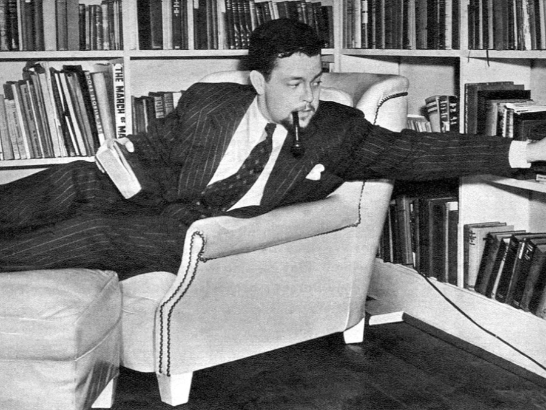

Citizen Kane was edited by Robert Wise and assistant editor Mark Robson. Both would become successful film directors. Wise was hired after Welles finished shooting the "camera tests" and began officially making the film. Wise said that Welles "had an older editor assigned to him for those tests and evidently he was not too happy and asked to have somebody else. I was roughly Orson's age and had several good credits." Wise and Robson began editing the film while it was still shooting and said that they "could tell certainly that we were getting something very special. It was outstanding film day in and day out."
Welles gave Wise detailed instructions and was usually not present during the film's editing. The film was very well planned out and intentionally shot for such post-production techniques as slow dissolves. The lack of coverage made editing easy since Welles and Toland edited the film "in camera" by leaving few options of how it could be put together. Wise said the breakfast table sequence took weeks to edit and get the correct "timing" and "rhythm" for the whip pans and overlapping dialogue. The News on the March sequence was edited by RKO's newsreel division to give it authenticity. They used stock footage from Pathé News and the General Film Library.
During post-production Welles and special effects artist Linwood G. Dunn experimented with an optical printer to improve certain scenes that Welles found unsatisfactory from the footage. Whereas Welles was often immediately pleased with Wise's work, he would require Dunn and post-production audio engineer James G. Stewart to re-do their work several times until he was satisfied.

Welles hired Bernard Herrmann to compose the film's score. Where most Hollywood film scores were written quickly, in as few as two or three weeks after filming was completed, Herrmann was given 12 weeks to write the music. He had sufficient time to do his own orchestrations and conducting, and worked on the film reel by reel as it was shot and cut. He wrote complete musical pieces for some of the montages, and Welles edited many of the scenes to match their length.